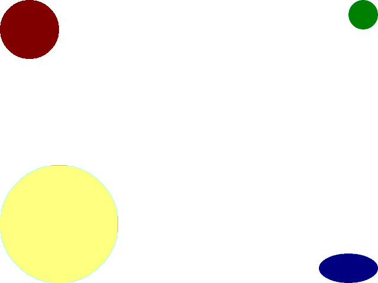
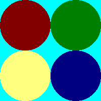

Sprite Clipping and Stretching

Last Updated: Jun 7th, 2025
In this tutorial we'll be taking some sprites on a sprite sheet and drawing them at varying sizes.
For this tutorial we'll have these four circle sprites
And we'll clip them from the sprite sheet and render them individually.

And we'll clip them from the sprite sheet and render them individually.
/* Class Prototypes */
class LTexture
{
public:
//Symbolic constant
static constexpr float kOriginalSize = -1.f;
//Initializes texture variables
LTexture();
//Cleans up texture variables
~LTexture();
//Loads texture from disk
bool loadFromFile( std::string path );
//Cleans up texture
void destroy();
//Draws texture
void render( float x, float y, SDL_FRect* clip = nullptr, float width = kOriginalSize, float height = kOriginalSize );
//Gets texture attributes
int getWidth();
int getHeight();
bool isLoaded();
private:
//Contains texture data
SDL_Texture* mTexture;
//Texture dimensions
int mWidth;
int mHeight;
};
At the top of our LTexture class, we're going to define a symbolic constant for when we want to render the sprites to their original size.
Symbolic constants may seem unnecessary but they make your code much more readable. Which of these is clearer, this?
For our texture rendering when the user gives a size less than 0 (and they probably don't want to render an image of a negative size), we're going to assume they want the original image size. Using
For our texture rendering function, we'll be passing in a clip rectangle to define the sprite we're using (if any) in addition to the image dimensions we want to use.
Symbolic constants may seem unnecessary but they make your code much more readable. Which of these is clearer, this?
else if( e.type == SDL_EVENT_KEY_DOWN )
{
if( e.key.key == SDLK_U )
{
action = 1;
}
else if( e.key.key == SDLK_I )
{
action = 2;
}
else if( e.key.key == SDLK_J )
{
action = 3;
}
else if( e.key.key == SDLK_K )
{
action = 4;
}
}
else if( e.type == SDL_EVENT_KEY_DOWN )
{
if( e.key.key == SDLK_U )
{
action = kActionPrevWeapon;
}
else if( e.key.key == SDLK_I )
{
action = kActionNextWeapon;
}
else if( e.key.key == SDLK_J )
{
action = kActionFireWeapon;
}
else if( e.key.key == SDLK_K )
{
action = kActionReloadWeapon;
}
}
For our texture rendering when the user gives a size less than 0 (and they probably don't want to render an image of a negative size), we're going to assume they want the original image size. Using
width = kOriginalSize is more intuitive than saying width = -1.f.For our texture rendering function, we'll be passing in a clip rectangle to define the sprite we're using (if any) in addition to the image dimensions we want to use.
void LTexture::render( float x, float y, SDL_FRect* clip, float width, float height )
{
//Set texture position
SDL_FRect dstRect{ x, y, static_cast( mWidth ), static_cast( mHeight ) };
//Default to clip dimensions if clip is given
if( clip != nullptr )
{
dstRect.w = clip->w;
dstRect.h = clip->h;
}
//Resize if new dimensions are given
if( width > 0 )
{
dstRect.w = width;
}
if( height > 0 )
{
dstRect.h = height;
}
//Render texture
SDL_RenderTexture( gRenderer, mTexture, clip, &dstRect );
}
For our new rendering function, we'll check if a clip rectangle was passed in. If it was we set the clip rectangle as the image default size. If size overrides were given resize the image to that override.
Now that we have the clip rectangle defined and the destination rectangle defined we render the texture with
Now that we have the clip rectangle defined and the destination rectangle defined we render the texture with
SDL_RenderTexture.
//Fill the background white
SDL_SetRenderDrawColor( gRenderer, 0xFF, 0xFF, 0xFF, 0xFF );
SDL_RenderClear( gRenderer );
//Init sprite clip
constexpr float kSpriteSize = 100.f;
SDL_FRect spriteClip{ 0.f, 0.f, kSpriteSize, kSpriteSize };
//Init sprite size
SDL_FRect spriteSize{ 0.f, 0.f, kSpriteSize, kSpriteSize };
Before we start our rendering code in the main loop we want to initialize the clip rectangle and size rectangle. All the sprites are 100 x 100 pixels so the clip each sprite is just a matter of repositioning the clip rectangle.
//Use top left sprite
spriteClip.x = 0.f;
spriteClip.y = 0.f;
//Set sprite size to original size
spriteSize.w = kSpriteSize;
spriteSize.h = kSpriteSize;
//Draw original sized sprite
gSpriteSheetTexture.render( 0.f, 0.f, &spriteClip, spriteSize.w, spriteSize.h );
For the top left sprite we position the clip rectangle at the top left and use the original size and draw it with our
render function.
//Use top right sprite
spriteClip.x = kSpriteSize;
spriteClip.y = 0.f;
//Set sprite to half size
spriteSize.w = kSpriteSize * 0.5f;
spriteSize.h = kSpriteSize * 0.5f;
//Draw half size sprite
gSpriteSheetTexture.render( kScreenWidth - spriteSize.w, 0.f, &spriteClip, spriteSize.w, spriteSize.h );
For the top right sprite we reposition the clip rectangle and set the sprite size to half the original because we want to draw a smaller sprite.
//Use bottom left sprite
spriteClip.x = 0.f;
spriteClip.y = kSpriteSize;
//Set sprite to double size
spriteSize.w = kSpriteSize * 2.f;
spriteSize.h = kSpriteSize * 2.f;
//Draw double size sprite
gSpriteSheetTexture.render( 0.f, kScreenHeight - spriteSize.h, &spriteClip, spriteSize.w, spriteSize.h );
//Use bottom right sprite
spriteClip.x = kSpriteSize;
spriteClip.y = kSpriteSize;
//Squish the sprite vertically
spriteSize.w = kSpriteSize;
spriteSize.h = kSpriteSize * 0.5f;
//Draw squished sprite
gSpriteSheetTexture.render( kScreenWidth - spriteSize.w, kScreenHeight - spriteSize.h, &spriteClip, spriteSize.w, spriteSize.h );
//Update screen
SDL_RenderPresent( gRenderer );
For the bottom right sprite, we're going to render the sprite double size. For the bottom right, we're going to squish the sprite vertically. Once all the sprites are rendered we update the screen with
SDL_RenderPresent
Addendum: YAGNI
I am not a fan of how this code is structured. Yes, I was the person who designed this code but making code you don't like is something that will happen in your professional career.
See in a real game engine designed to scale, I would decouple the sprite definition (which would consist of a clip rectangle and a pointer to the sprite sheet it comes from) and the object's position/scaling transformation into their own individual classes. However, to do so would require making two additional classes and probably a game object class to bring it all together. This demo manages to do it all by adding a few lines to the
If you were making a platformer that was going to have multiple animations across multiple sprite sheets you would probably want to decouple sprite definition from sprite transfromation. For a Nasty Tetris Project, it's better to just keep your code to be minimal because you just want to get it done. This is the principle of You Aren't Gonna Need It.
Your Nasty Tetris Project is going to be nasty. Trying to make it flexible or well designed is just going to lead to it being over engineered. Just focus on getting it done with as little code as possible.
See in a real game engine designed to scale, I would decouple the sprite definition (which would consist of a clip rectangle and a pointer to the sprite sheet it comes from) and the object's position/scaling transformation into their own individual classes. However, to do so would require making two additional classes and probably a game object class to bring it all together. This demo manages to do it all by adding a few lines to the
LTexture class and not having to juggle multiple classes. For these tutorials I will sacrifice code that is technically better designed but more complex for
code that is smaller and easier to keep track of even if it's clunky.If you were making a platformer that was going to have multiple animations across multiple sprite sheets you would probably want to decouple sprite definition from sprite transfromation. For a Nasty Tetris Project, it's better to just keep your code to be minimal because you just want to get it done. This is the principle of You Aren't Gonna Need It.
Your Nasty Tetris Project is going to be nasty. Trying to make it flexible or well designed is just going to lead to it being over engineered. Just focus on getting it done with as little code as possible.